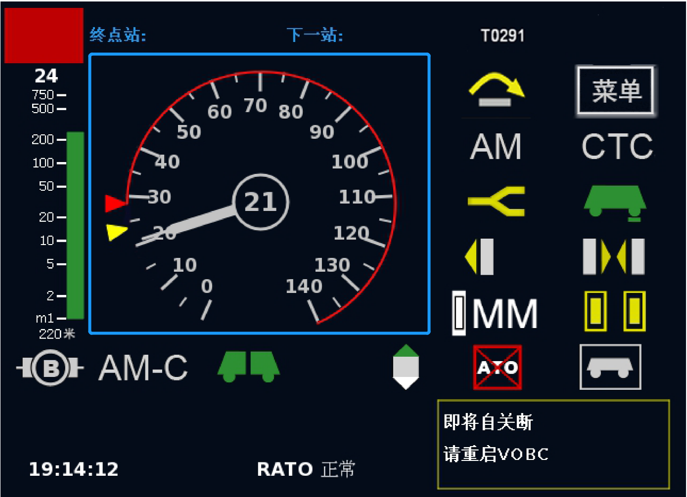

城市轨道交通—单选题
已完成:
1
/110
书签:
01
50
100
110
（1）依据《国务院办公厅关于保障城市轨道交通安全运行的意见》（国办发〔2018〕13号），强化技术标准规范对安全和服务的保障和引领作用，以
____
和服务质量为重点，建立健全城市轨道交通运营标准体系。
防范处置
应急管理
运营安全
设备配置
（2）依据《国务院办公厅关于保障城市轨道交通安全运行的意见》（国办发〔2018〕13号），城市轨道交通建设规划要树立
____
的理念，将安全和服务要求贯穿于规划、建设、运营全过程。
一体化融合发展
规划建设为运营、运营服务为乘客
规划建设与运营服务并重
可持续发展
（3）依据《国务院办公厅关于保障城市轨道交通安全运行的意见》（国办发〔2018〕13号），在工程可行性研究和初步设计文件中设置
____
，发展改革、规划等部门在审批时要以书面形式听取同级交通运输部门、公安机关意见。
运营安全专篇和公共安全专篇
运营服务专篇和公共安全专篇
服务质量专篇和安全保障专篇
运营安全专篇和公共安全专篇
（4）依据《国务院办公厅关于保障城市轨道交通安全运行的意见》（国办发〔2018〕13号），城市轨道交通工程项目原则上要在
____
编制前确定运营单位。
项目建议书
可行性研究报告
总体设计文件
初步设计文件
（5）依据《国务院办公厅关于保障城市轨道交通安全运行的意见》（国办发〔2018〕13号），运营单位承担
____
主体责任，落实
____
等有关法规规定的责任和措施。
安全生产
；
反恐防暴、内部治安保卫、消防安全
;
反恐防暴；安全生产、内部治安保卫、消防安全
内部治安保卫；安全生产、反恐防暴、消防安全
消防安全；安全生产、反恐防暴、内部治安保卫
（6）依据《国务院办公厅关于保障城市轨道交通安全运行的意见》（国办发〔2018〕13号），关于城市轨道交通应急处置应对工作，公安、交通运输等部门以及运营单位、街道、社区要密切协同联动。要充分发挥志愿者在安全防范和应急处置中的积极作用，提高乘客
____
能力。
应急抢修
快速处置
自救互救
应急报警
（7）依据《国务院办公厅关于保障城市轨道交通安全运行的意见》（国办发〔2018〕13号），城市轨道交通线网规划要科学确定线网布局、规模和用地控制要求，与综合交通体系规划有机衔接，主要内容纳入
____
。
城市综合交通规划
城市总体规划
城市建设规划
城市公共交通规划
（8）依据《国家城市轨道交通运营突发事件应急预案》（国办函〔2015〕32号）适用于城市轨道交通运营过程中发生的因列车撞击、脱轨，设施设备故障、损毁，以及
____
等情况，造成人员伤亡、行车中断、财产损失的突发事件应对工作。
气象灾害
刑事案件
公共卫生事件
大客流
（9）依据《国家城市轨道交通运营突发事件应急预案》（国办函〔2015〕32号）中规定的事件分级标准的指标
不包括
____
。
死亡人数
直接经济损失
轻伤人数
连续中断行车时间
（10）依据《国务院办公厅关于保障城市轨道交通安全运行的意见》（国办发〔2018〕13号），要建立协调联动、快速反应、科学处置的工作机制，强化
____
对突发事件第一时间处置应对的能力，最大程度减少突发事件可能导致的人员伤亡和财产损失。
城市人民政府
交通运输部
运营主管部门
运营单位
（11）依据《国家城市轨道交通运营突发事件应急预案》（国办函〔2015〕32号），根据运营突发事件的严重程度和发展态势，将应急响应设定为
____
个等级。
3
4
5
6
（12）依据《国家城市轨道交通运营突发事件应急预案》（国办函〔2015〕32号），运营突发事件应对工作坚持统一领导、属地负责，条块结合、协调联动，
____
的原则。
及时报告、科学处置
及时报告、以人为本
快速反应、科学处置
快速反应、以人为本
（13）依据《国家城市轨道交通运营突发事件应急预案》（国办函〔2015〕32号），运营单位要及时对可能导致运营突发事件的风险信息进行分析研判，预估可能造成影响的
____
和
____
。
范围
；
程度
损失；风险
风险；范围
程度；损失
（14）依据《城市轨道交通运营管理规定》（中华人民共和国交通运输部令2018年第8号），
____
应当按照法律法规的规定取得职业准入资格。
列车驾驶员
行车调度员
行车值班员
站务员
（15）依据《城市轨道交通运营管理规定》（中华人民共和国交通运输部令2018年第8号），运营单位应当建立
____
，严格落实
网络安全
有关规定和等级保护要求，加强列车运行控制等关键系统信息安全保护。
应急管理体系
网络安全管理制度
应急演练制度
隐患排查治理制度
（16）依据《城市轨道交通运营管理规定》（中华人民共和国交通运输部令2018年第8号），运营单位应当定期组织运营突发事件应急演练，其中综合应急预案演练和专项应急预案演练
____
至少组织一次。
每两年
每年
每半年
每季度
（17）依据《城市轨道交通运营安全风险分级管控和隐患排查治理管理办法》（交运规〔2019〕7号），城市轨道交通运营单位应按规定开展运营安全隐患排查治理工作，实现运营安全隐患排查治理的有效闭环。以下
不属于
规定的专项隐患排查涵盖范围的是
____
。
重要节假日、重大活动等关键运输节点前
重点施工作业进行期间
工作日和周末列车运行图转换期间
发生重大故障或运营险性事件
（18）依据《城市轨道交通运营安全风险分级管控和隐患排查治理管理办法》（交运规〔2019〕7号），城市轨道交通日常隐患排查是指结合班组、岗位日常工作组织开展的经常性隐患排查，排查范围应覆盖日常生产作业环节，排查频率应为
____
。
每周不少于1次
每周不少于2次
每日1次
每月不少于1次
（19）依据《城市轨道交通运营安全风险分级管控和隐患排查治理管理办法》（交运规〔2019〕7号），城市轨道交通运营单位应按照“分级管控”原则建立健全风险管控工作机制。对于重大风险，应由
____
牵头组织制定管控措施；对于较大风险，应由
____
牵头组织制定管控措施；对于一般及较小风险，应由
____
组织制定管控措施。
运营单位负责人；安全管理人员；班组负责人
专业部门负责人；安全管理人员；班组负责人
运营单位负责人
；
专业部门负责人
；
班组负责人
专业部门负责人；班组负责人；现场工作人员
（20）依据《城市轨道交通运营安全风险分级管控和隐患排查治理管理办法》（交运规〔2019〕7号），一般隐患整改完成后，由运营单位
____
或相关专业技术人员复核确认销号。
主要负责人
负责人
部门负责人
班组长
（21）依据《城市轨道交通运营安全风险分级管控和隐患排查治理管理办法》（交运规〔2019〕7号），对于排查出的重大隐患，运营单位应立即上报城市轨道交通运营主管部门，由城市轨道交通运营主管部门
____
。
组织整改
挂牌督办
强化督导
纳入台账
（22）依据《城市轨道交通运营安全风险分级管控和隐患排查治理管理办法》（交运规〔2019〕7号），运营单位制定的隐患治理方案应自排查出重大隐患之日起
____
内报送城市轨道交通运营主管部门；重大隐患整改完成后，应当于
____
内报送城市轨道交通运营主管部门。
10个工作日；3个工作日
15个工作日
；
3个工作日
20个工作日；5个工作日
30个工作日；5个工作日
（23）依据《城市轨道交通运营安全风险分级管控和隐患排查治理管理办法》（交运规〔2019〕7号），新增或更新的风险管控措施应及时修订到本单位的相关管理制度、作业标准或应急预案。其中，重大风险管控措施应在
____
个月内修订完成。
1
3
6
12
（24）依据《城市轨道交通运营安全风险分级管控和隐患排查治理管理办法》（交运规〔2019〕7号），城市轨道交通运营安全风险分级管控和隐患排查治理工作坚持目标导向、全面覆盖、科学施策、
____
的原则。
闭环管理
安全生产
逐级负责
以人为本
（25）依据《城市轨道交通运营安全风险分级管控和隐患排查治理管理办法》（交运规〔2019〕7号），城市轨道交通运营单位承担运营安全风险分级管控和隐患排查治理工作
____
，逐级分解责任，确保责任落实到部门和岗位。
部分责任
主体责任
同等责任
一定责任
（26）依据《城市轨道交通运营安全风险分级管控和隐患排查治理管理办法》（交运规〔2019〕7号），城市轨道交通运营安全风险等级从高到低划分为哪几个等级
____
。
重大、较大、一般、较小
重大、较大、一般
重大、一般
特别重大、重大、较大、一般、较小
（27）依据《城市轨道交通行车组织管理办法》，城市轨道交通运营单位应将
____
作为行车组织工作的基础，组织内部各部门严格根据列车运行图的要求开展运营生产工作，保证按图行车。
列车运行图
信号系统
客运组织
司机排班
（28）依据《城市轨道交通行车组织管理办法》，城市轨道交通地面线路发生火灾、爆炸、毒气攻击等事件时，应
____
。
立即报告行车调度员，按调度命令执行
立即停车，及时疏散
立即电话请示车队长
立即停车，观察，向行车调度员报告
（29）依据《城市轨道交通行车组织管理办法》，当城市轨道交通列车在区间发生突发情况时，行车调度人员应及时发布调度命令，在保证行车安全的前提下
____
。
立即停车
等待救援
尽可能维持列车运行
立即清客
（30）依据《城市轨道交通行车组织管理办法》，城市轨道交通运营单位应合理安排驾驶员工作时间，单次值乘的驾驶时长不应超过
____
小时；连续值乘间隔不应小于
____
分钟。
1；10
2
；
15
3；20
4；30
（31）依据《城市轨道交通行车组织管理办法》，城市轨道交通施工列车作业区域与相邻的施工区域应至少保持
____
间隔。跟随末班车运行的工程车，与前方运营列车应至少保持
____
行车间隔。
一站一区间
；
一站一区间
一站一区间；两站一区间
两站一区间；两站一区间
两站一区间；一站一区间
（32）依据《城市轨道交通行车组织管理办法》，城市轨道交通运营单位使用的列车运行图应至少保存
____
年。
1
2
3
4
（33）依据《城市轨道交通行车组织管理办法》，城市轨道交通列车需越过防护信号机显示的禁止信号时，行车调度人员应确认该信号机后方线路空闲、道岔位置正确且锁闭后，方可发布越过禁止信号的命令，首列车运行速度不应高于
____
km/h。
35
30
20
25
（34）依据《城市轨道交通行车组织管理办法》，城市轨道交通列车停站越过停车标未超过可退行距离需退行时，驾驶员应退行列车，推进退行速度不应超过
____
km/h。
5
10
15
20
（35）依据《城市轨道交通行车组织管理办法》，城市轨道交通列车因故需在区间退行或列车越过停车标超过可退行距离确需退行时，驾驶员应及时报告行车调度人员。行车调度人员应扣停后续列车，在确认列车退行路径空闲且满足安全防护距离、道岔位置正确且锁闭后，方可发布退行命令，必要时应组织车站行车人员做好引导。
推进退行
速度不应超过
____
km/h，
牵引退行
速度不应超过
____
km/h。
15；35
10
；
35
20；35
20；50
（36）依据《城市轨道交通行车组织管理办法》，当城市轨道交通接触网（轨）失电时，驾驶员应尽量维持列车进站，并及时报告行车调度人员。行车及电力调度人员应组织设备维护人员及时排查处理，具备条件的应及时切换供电方式，必要时减少列车上线运行对数。列车迫停地下区间超过
____
分钟时，环控调度人员应启动相应环控模式。
3
4
5
8
（37）依据《城市轨道交通行车组织管理办法》，遇恶劣天气时，城市轨道交通行车相关人员可根据情况及时采取加强瞭望、限速、停运、封站等措施，并应按照以下要求组织行车调整，对于地面及高架线路，风力波及区段
风力达7级
时列车运行速度不应超过
____
km/h，
风力达8级
时列车运行速度不应超过
____
km/h，风力达9级及以上时应停运。
65；15
60
；
25
60；30
65；30
（38）依据《城市轨道交通行车组织管理办法》，城市轨道交通列车等级由高至低排列正确的是
____
。
载客列车、专运列车、调试列车、空驶列车、其他列车
专运列车、载客列车、空驶列车、调试列车、其他列车
载客列车、专运列车、空驶列车、调试列车、其他列车
专运列车、载客列车、调试列车、空驶列车、其他列车
（39）依据《城市轨道交通行车组织管理办法》，行车组织方法由高至低排列正确的是
____
。
准移动闭塞法、移动闭塞法、进路闭塞法、电话闭塞法
移动闭塞法、准移动闭塞法、电话闭塞法、进路闭塞法
移动闭塞法、准移动闭塞法、进路闭塞法、电话闭塞法
准移动闭塞法、移动闭塞法、电话闭塞法、进路闭塞法
（40）依据《城市轨道交通行车组织管理办法》，列车连挂
后两列车均为空驶的
，
推进运行
速度不应超过
____
km/h，
牵引运行
速度不应超过
____
km/h；任一列车
载客的，运行
速度不应超过
____
km/h。
30
；
45
；
25
30；25；45
25；30；45
25；45；30
（41）依据《城市轨道交通行车组织管理办法》，遇雾、霾、雨、雪、沙尘等恶劣天气，瞭望距离不足100米、50米、30米时，列车运行速度分别不应超过
____
km/h、
____
km/h、
____
km/h。
60；40；20
50；40；30
50
；
30
；
15
50；25；10
（42）依据《城市轨道交通客运组织与服务管理办法》（交运规〔2019〕15号），以下哪条措施
不属于
城市轨道交通常用的客流控制措施
____
。
关停部分自动检票机
关闭自动扶梯
关闭换乘通道
关闭车站
（43）依据《城市轨道交通客运组织与服务管理办法》（交运规〔2019〕15号），车站工作人员应对车站出入口、站厅、站台、通道等公共区域进行巡视，巡视频率不低于每
____
小时一次。
1
2
3
4
（44）依据《城市轨道交通客运组织与服务管理办法》（交运规〔2019〕15号），运营单位应当持续监测客流情况，科学编制
____
，在线路涉及能力范围内合理安排运力，不断满足客流需求。
列车停站方案
列车运行计划
列车配属计划
列车交路方案
（45）依据《城市轨道交通设施设备运行维护管理办法》，对城市轨道交通区间消防电话、应急照明、区间联络通道、区间疏散平台、车站、区间人防门（防淹门）和区间防排烟系统和风阀等设施设备，至少每
____
个月进行一次检查和功能测试。
6
12
18
24
（46）依据《城市轨道交通设施设备运行维护管理办法》，城市轨道交通运营单位应按
____
统计设施设备故障情况，定期开展设施设备故障发生次数、平均无故障运行时间、故障发生率等重点指标分析，对设施设备运行状况和服役能力进行持续评估，为设施设备维护及更新改造提供支持。
半年
月
季
年
（47）依据《城市轨道交通设施设备运行维护管理办法》，城市轨道交通运营单位应定期组织对桥梁、隧道、轨道、路基等设施进行巡查和监测工作，混凝土桥梁巡查频率应至少每
____
个月检查1次。
3
5
6
8
（48）依据《城市轨道交通设施设备运行维护管理办法》，城市轨道交通运营单位对信号系统降级功能、接触网（轨）单边供电和大双边供电功能，至少每
____
个月进行一次测试。
6
12
18
24
（49）依据《城市轨道交通设施设备运行维护管理办法》，城市轨道交通车辆系统列检间隔时间不超过
____
天，月检间隔时间不超过
____
个月。
15
；
3
10；3
15；6
10；6
（50）依据《城市轨道交通设施设备运行维护管理办法》， 城市轨道交通车辆系统大修间隔不超过
____
。
10年或140万车公里
10年或160万车公里
20年或250万车公里
20年或300万车公里
（51）依据《城市轨道交通设施设备运行维护管理办法》，城市轨道交通车辆系统整体使用寿命一般不超过
____
。
20年或300万车公里
20年或350万车公里
30年或480万车公里
30年或540万车公里
（52）依据《城市轨道交通设施设备运行维护管理办法》，城市轨道交通信号系统维护间隔时间不超过
____
天，整体使用寿命一般不超过
____
年。
7；25
7
；
20
15；20
15；25
（53）依据《城市轨道交通设施设备运行维护管理办法》，城市轨道交通运营单位应合理制定运营计划，保障设施设备维护工作时间，运营线路每天非运营时间内的设备设施检修施工预留时间不宜少于
____
小时。
3
8
4
6
（54）依据《城市轨道交通设施设备运行维护管理办法》，城市轨道交通信号系统更新改造时，新旧信号系统兼容运行的，在对两列列车进行升级并上线试用不少于
____
后，方可开展对其他列车分批次更新升级。
半个月
1个月
2个月
3个月
（55）依据《城市轨道交通设施设备运行维护管理办法》，城市轨道交通新旧信号系统倒切前，应在非运营时段开展不少于
____
次的实战演练，新信号系统经过累计不少于
____
小时的不载客运行后方可投入运营。
1；120
2；144
3
；
144
4；120
（56）依据《城市轨道交通设施设备运行维护管理办法》，城市轨道交通更新改造过程中，轨道、车辆、供电、通信、信号等关键设施设备的主要部件批量采用新技术、新材料或新产品的，运营单位应在更新改造前对其安全性、可靠性、可维护性等进行充分评估，并小范围试用不少于
____
个月，确认满足设施设备功能要求后方可逐步推广应用。
3
6
9
12
（57）依据《城市轨道交通设施设备运行维护管理办法》，城市轨道交通运营单位应按
____
编制设施设备更新改造方案，包含可行性论证、设计文件、运营组织调整方案和安全保障措施等内容。
月度
季度
半年度
年度
（58）依据《城市轨道交通运营突发事件应急演练管理办法》（交运规〔2019〕9号），运营单位应在年度演练计划周期结束后
____
个工作日内，将演练总结报告报送城市轨道交通运营主管部门。
10
15
20
25
（59）依据《城市轨道交通运营突发事件应急演练管理办法》（交运规〔2019〕9号），
不属于
城市轨道交通运营单位应急预案体系的是
____
。
部门应急预案
综合应急预案
专项应急预案
现场处置方案
（60）依据《城市轨道交通运营突发事件应急演练管理办法》（交运规〔2019〕9号），运营单位新编制或修订的综合、专项应急预案，应在预案生效
____
内报城市轨道交通运营主管部门。
15日
15个工作日
20日
20个工作日
（61）依据《城市轨道交通运营突发事件应急演练管理办法》（交运规〔2019〕9号），运营单位年度应急演练计划中实战演练比例不得低于
____
。
50%
60%
70%
80%
（62）依据《城市轨道交通运营突发事件应急演练管理办法》（交运规〔2019〕9号），运营单位综合应急预案应与政府层面的哪一项应急预案相衔接？
____
。
总体应急预案
专项应急预案
部门应急预案
现场处置方案
（63）依据《城市轨道交通运营突发事件应急演练管理办法》（交运规〔2019〕9号），以下哪项内容
不是
电力调度员、环控调度员现场处置方案的内容？
____
。
大面积停电
供电区段失电
区间火灾
站台门故障
（64）依据《城市轨道交通运营险性事件信息报告与分析管理办法》（交运规〔2019〕10号），运营单位应在形成运营险性事件技术分析报告后
____
个工作日内，报送至城市轨道交通运营主管部门。
15
10
5
3
（65）依据《城市轨道交通运营险性事件信息报告与分析管理办法》（交运规〔2019〕10号），城市轨道交通发生运营险性事件的，运营单位应在
____
小时内向城市轨道交通运营主管部门报告；重大情况可越级上报。
1
2
3
4
（66）依据《城市轨道交通正式运营前和运营期间安全评估管理暂行办法》（交运规〔2019〕16号），对正式运营前安全评估发现的问题，
____
应会同建设单位、设备供应商等制定整改方案，明确整改计划和措施，有关责任单位应按要求整改到位；对运营期间安全评估发现的问题，
____
应制定整改方案，明确整改计划和措施。
运营单位
；
运营单位
运营单位；建设单位
施工单位；运营单位
施工单位；建设单位
（67）依据《城市轨道交通正式运营前和运营期间安全评估管理暂行办法》（交运规〔2019〕16号），城市轨道交通运营主管部门应当对投入运营的城市轨道交通线网进行运营期间安全评估，至少每
____
年组织开展一次。
1
2
3
5
（68）依据《城市轨道交通初期运营前安全评估技术规范 第1部分：地铁和轻轨》（交办运〔2019〕17号），城市轨道交通工程开展初期运营前安全评估时，试运行时间不少于
____
个月。
1
2
3
4
（69）依据《城市轨道交通初期运营前安全评估技术规范 第1部分：地铁和轻轨》（交办运〔2019〕17号），城市轨道交通工程开展初期运营前安全评估时，试运行期间应按照开通运营时列车运行图连续组织行车
____
日以上且关键指标符合相关规定。
10
20
30
40
（70）依据《城市轨道交通初期运营前安全评估技术规范 第1部分：地铁和轻轨》（交办运〔2019〕17号），城市轨道交通车站每个站厅公共区至少有
____
个独立、直通地面的
出入口
具备使用条件。
1
2
3
4
（71）依据《城市轨道交通初期运营前安全评估技术规范 第1部分：地铁和轻轨》（交办运〔2019〕17号），当城市轨道交通高架区间上跨道路净空高度不大于
____
m时，应具
有限高标志和限界防护架
。
3.5
4.5
4
5
（72）依据《城市轨道交通初期运营前安全评估技术规范 第1部分：地铁和轻轨》（交办运〔2019〕17号），开展城市轨道交通初期运营前安全评估时，各列车运行里程均不少于
____
列公里。
1000
2000
3000
4000
（73）依据《城市轨道交通初期运营前安全评估技术规范 第1部分：地铁和轻轨》（交办运〔2019〕17号），城市轨道交通车辆基地应有不少于
____
个具备使用条件并与外界道路相通的
出入口
。
1
2
3
4
（74）依据《城市轨道交通初期运营前安全评估技术规范 第1部分：地铁和轻轨》（交办运〔2019〕17号），
城市轨道交通
运营单位主要负责人和安全生产管理人员应按规定接受安全培训，
初次安全培训
时间不少于
____
学时。
8
16
24
32
（75）依据《城市轨道交通初期运营前安全评估技术规范 第1部分：地铁和轻轨》（交办运〔2019〕17号），车站出入口至站厅、站厅至站台应至少各有
____
台电梯和
____
组上、下行自动扶梯具备使用条件。
1
、
1
2、1
1、2
2、2
（76）依据《城市轨道交通初期运营前安全评估技术规范 第1部分：地铁和轻轨》（交办运〔2019〕17号），在经验丰富的列车驾驶员指导和监督下驾驶，驾驶里程不少于5000km，其中在本线上的里程不少于
____
km。
200
500
1000
1500
（77）依据《城市轨道交通初期运营前安全评估技术规范 第1部分：地铁和轻轨》（交办运〔2019〕17号），行车调度员、电力调度员和环控调度员，应在经验丰富的调度员指导和监督下进行操作，时间不少于
____
个月。
1
2
3
6
（78）依据《城市轨道交通初期运营前安全评估技术规范 第1部分：地铁和轻轨》（交办运〔2019〕17号），行车值班员应接受不少于
____
学时的理论知识培训和不少于
____
个月的岗位技能培训。
100，1
100，半
150，半
150
，
1
（79）依据《城市轨道交通正式运营前安全评估规范 第1部分：地铁和轻轨》（交办运〔2019〕83号），城市轨道交通线路投入初期运营
____
内，应完成首次全面风险辨识。
3个月
6个月
1年
2年
（80）依据《城市轨道交通正式运营前安全评估规范 第1部分：地铁和轻轨》（交办运〔2019〕83号），城市轨道交通客运组织方案及其实施情况原则上
____
评估一次，并针对评估中发现的问题进行整改、完善。
每半年
每月
每季度
每年
（81）依据《城市轨道交通正式运营前安全评估规范 第1部分：地铁和轻轨》（交办运〔2019〕83号），新增的城市轨道交通运营人员，应经岗位培训合格后持证上岗。转岗员工或脱岗
____
个月以上的复岗员工，应通过相关再教育培训，经考核合格后方可上岗。
12
3
1
6
（82）依据《城市轨道交通正式运营前安全评估规范 第1部分：地铁和轻轨》（交办运〔2019〕83号），城市轨道交通列车驾驶员、调度员、行车值班员从其他线路调入本线时，应经过本线路的学习考试，并在经验丰富的人员指导和监督下进行不少于
____
天的现场业务操作。
15
7
30
45
（83）依据《城市轨道交通正式运营前安全评估规范 第1部分：地铁和轻轨》（交办运〔2019〕83号），城市轨道交通改变设施设备原设计结构、主要功能和架构、软件设计等应通过论证。新增的设施设备应通过
____
并按规定进行维护管理，投用前应完成相关岗位从业人员
____
培训。
验收
；
安全生产知识和操作技能
验收；安全生产知识
审批；安全生产知识和操作技能
审批；安全生产知识
（84）依据《城市轨道交通正式运营前安全评估规范 第1部分：地铁和轻轨》（交办运〔2019〕83号），城市轨道交通运营单位应急演练评估报告中涉及应急处置机制、作业标准、操作规程和管理规定等有关缺陷的，应在
____
内修订完善相关预案和制度。
1个月
2个月
3个月
6个月
（85）依据《城市轨道交通正式运营前安全评估规范 第1部分：地铁和轻轨》（交办运〔2019〕83号）， 城市轨道交通调度命令记录应至少保存
____
。
半年
1年
2年
3年
（86）依据《城市轨道交通正式运营前安全评估规范 第1部分：地铁和轻轨》（交办运〔2019〕83号）， 针对超速运行可能导致城市轨道交通行车事故的风险，列车运行按照规定速度或限速命令行车，临时限速命令应由
____
发布和取消，不得擅自发布和取消。
值班主任
行车调度员
车站值班员
环控调度员
（87）依据《城市轨道交通正式运营前安全评估规范 第1部分：地铁和轻轨》（交办运〔2019〕83号）， 针对城市轨道交通调车作业防护距离不足可能导致形成事故的风险，在尽头线上进行调车作业时，距线路终端应有
____
m的安全距离。
10
5
15
20
（88）依据《城市轨道交通正式运营前安全评估规范 第1部分：地铁和轻轨》（交办运〔2019〕83号）， 针对城市轨道交通排水设施阻塞可能导致风险，在相关岗位巡查和养护规程中制定的风险管控措施应对排水沟等设施进行巡查，及时发现淤积、堵塞、滞水等现象，巡查频率不低于
____
，汛期应提高防排水设施巡查频次。
2次/月
3次/月
1次/周
1次/月
（89）依据《城市轨道交通正式运营前安全评估规范 第1部分：地铁和轻轨》（交办运〔2019〕83号），城市轨道交通行车调度应落实调度命令的发布、执行规定，调度命令的内容和传达应
____
。
准确、快速、简明
准确、简明、规范
准确、快速、规范
快速、简明、规范
（90）依据《城市轨道交通正式运营前安全评估规范 第1部分：地铁和轻轨》（交办运〔2019〕83号），城市轨道交通行车调度口头命令要素
不包含
下列哪项内容
____
。
命令号码
命令内容
时间
受令人
（91）据《城市轨道交通正式运营前安全评估规范 第1部分：地铁和轻轨》（交办运〔2019〕83号），正式运营前安全评估的前提条件包括开展正式运营前安全评估的前
____
未发生列车脱轨、列车冲突、列车撞击、桥隧结构坍塌，人员死亡、连续中断行车2小时（含）以上等运营险性事件。
3个月
6个月
1年内
18个月
（92）依据《城市轨道交通正式运营前安全评估规范 第1部分：地铁和轻轨》（交办运〔2019〕83号），针对越过防护信号机禁止信号行车可能导致行车事故的风险，行车调度员应确认该信号机后方线路空闲、道岔位置正确且锁闭，并凭调度命令越过，首列列车限速
____
km/h运行；
15
20
25
30
（93）依据《城市轨道交通正式运营前安全评估规范 第1部分：地铁和轻轨》（交办运〔2019〕83号），救援列车接近故障列车时应停车，与故障列车联系确认后进行连挂，连挂时运行速度不应超过
____
km/h。
5
10
15
20
（94）依据《城市轨道交通正式运营前安全评估规范 第1部分：地铁和轻轨》（交办运〔2019〕83号），非随车施工人员与工程车确需在同区间作业的，应统一进行现场施工及动车指挥，施工人员应在工程车运行方向后方作业，至少保持
____
m以上的安全距离，并设置红闪灯等进行安全防护。
15
25
35
50
（95）依据《城市轨道交通运营期间安全评估规范》（交办运〔2019〕84号），城市轨道交通线网应急应具备“站点-区域-基地”三级应急点结构，其中应急基地的处置能力原则上应具备救援人员
____
分钟内到达事故现场的响应速度。
30
20
25
10
（96）依据《城市轨道交通运营期间安全评估规范》（交办运〔2019〕84号），城市轨道交通区域应急中心的处置能力应至少覆盖
____
公里半径范围内的线网，实现救援人员
____
分钟内到达事故现场的响应速度，各区域应急中心的处置能力应能覆盖整个线网。
3；20
5
；
20
5；30
10；60
（97）根据《城市轨道交通信号系统运营技术规范（试行）》，城市轨道交通信号系统应具备故障分级报警功能，报警等级按照对列车运行影响程度从高到低分为四级，以下属于
一级报警
的是
____
。
ATP和CI子系统功能失效、道岔失表、车地通信中断、ATS中央服务器功能失效等涉及行车安全或直接影响行车的报警
ATP、ATS、CI子系统冗余失效，ATS子系统与外部系统接口故障、通信单网、电源单路等可能影响行车的报警
发车指示器故障
维护监测设备故障
（98）根据《城市轨道交通信号系统运营技术规范（试行）》，城市轨道交通车载信号人机界面如下图所示，图中蓝色方框中代表的是什么内容？
____
。

终点站显示
速度表盘
目标速度及目标距离信息
超速报警及输出紧急制动显示
（99）根据《城市轨道交通信号系统运营技术规范（试行）》，以下哪项
不是
信号系统计算机联锁子系统的主要功能？
____
。
列车定位和测速
进路办理、锁闭与解锁控制
道岔控制
信号机开放与关闭控制
（100）根据《城市轨道交通信号系统运营技术规范（试行）》，当列车以AM模式运行时，当车载信号人机界面出现以下哪个图标时表示制动状态？
____
。
（101）根据《城市轨道交通信号系统运营技术规范（试行）》，在
CBTC
模式下，信号系统ATS子系统正线信号机的显示状态为
(下图)
，其表示的含义为
____
。
进路开通直向，准许列车按规定的速度越过该信号机
进路开通侧向，准许列车按规定的速度越过该信号机
不准列车越过该信号机
信号机已封锁，以该信号机为始端或终端的进路不能办理
（102）根据《城市轨道交通信号系统运营技术规范（试行）》，信号系统ATS子系统道岔图标显示为
(下图)（岔心和名称红色闪烁）
，其含义为
____
。
道岔挤岔
道岔转动未到位
道岔定位单锁
道岔反位单锁
（103）根据《城市轨道交通信号系统运营技术规范（试行）》，正线道岔防护信号机、出站兼道岔防护信号机采用黄、绿、红三灯位信号机构，
黄色灯光
的显示含义为
____
。
表示进路开通直向，准许列车按规定的速度越过该信号机
表示进路开通侧向，准许列车按规定的速度越过该信号机
不准列车越过该信号机
表示开放引导信号，准许列车以不大于规定速度越过该信号机并须准备随时停车
（104）根据《城市轨道交通自动售检票系统运营技术规范（试行）》，城市轨道交通清分子系统、互联网票务平台不应低于网络安全等级保护
____
要求。
一级
二级
三级
四级
（105）根据《城市轨道交通自动售检票系统运营技术规范（试行）》，城市轨道交通自动售检票系统采用监视网络设备、链路、接口流量、带宽、时延等运行状态信息，信息存储时间不少于
____
个月。
1
3
6
12
（106）根据《城市轨道交通自动售检票系统运营技术规范（试行）》，城市轨道交通每个自动售检票群组应至少设置
____
台双向宽通道自动检票机，宽通道自动检票机通道净距宜为
____
毫米。
1
；
900
1；1000
2；900
2；1000
（107）根据《城市轨道交通运营应急能力建设基本要求》，以下哪一项
不属于
城市轨道交通运营单位风险监测的主要内容
____
。
列车运行监测
供电系统运行监测
站车环境监测
乘客行为监测
（108）根据《城市轨道交通运营应急能力建设基本要求》，城市轨道交通专职应急救援队员每人每周参加业务技能训练不少于
____
学时，兼职应急救援队员每人每月参加安全应急相关培训不少于
____
学时。
12；1
24
；
2
24；1
36；4
（109）根据《城市轨道交通运营应急能力建设基本要求》，城市轨道交通运营单位应采用应急演练、技术比武等方式对员工的应急能力进行强化训练，频率不应低于
____
。运营单位应采用抽测考试、第三方评估等形式对员工的应急能力进行考核，频率不应低于
____
。
每季度1次
；
每年1次
每季度1次；每年2次
每半年1次；每年1次
每半年1次；每年2次
（110）依据《生产安全事故应急条例》（中华人民共和国国务院令 第708号），城市轨道交通运营单位应当至少
____
组织1次生产安全事故应急救援预案演练，并将演练情况报送所在地县级以上地方人民政府负有安全生产监督管理职责的部门。
每季度
每半年
每年
每两年